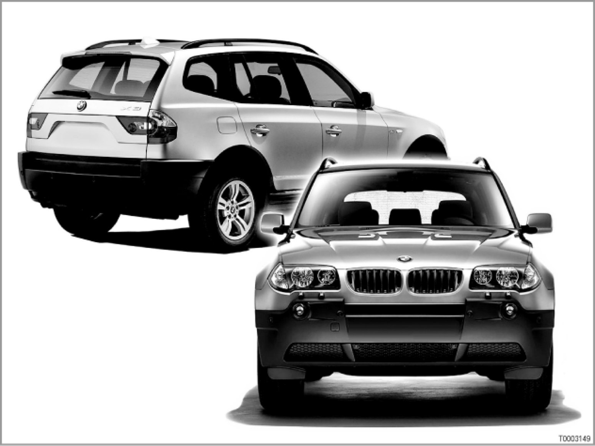
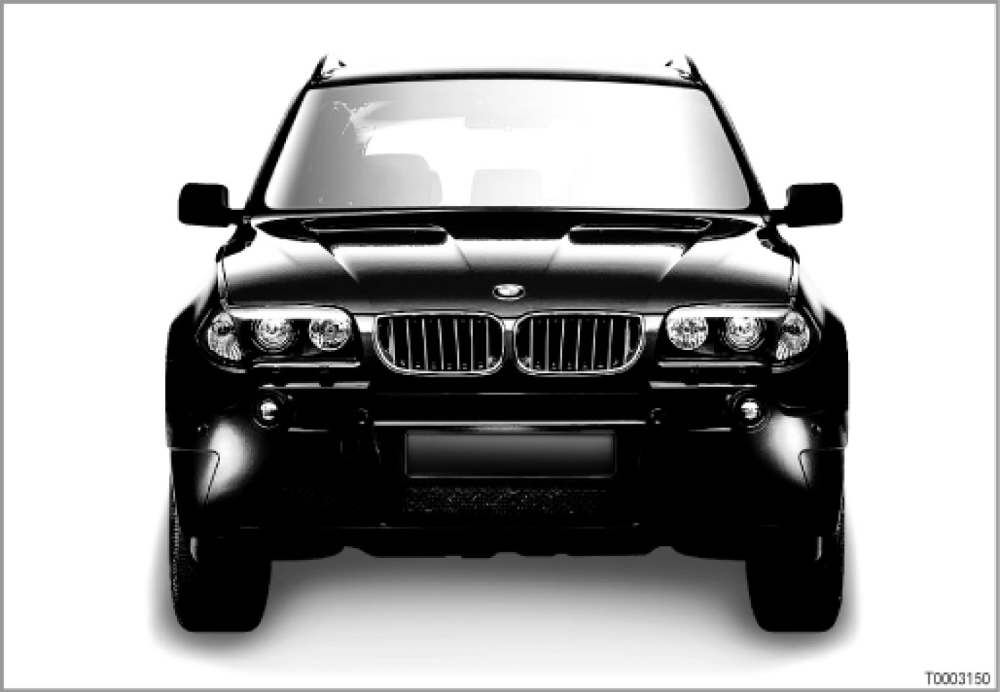
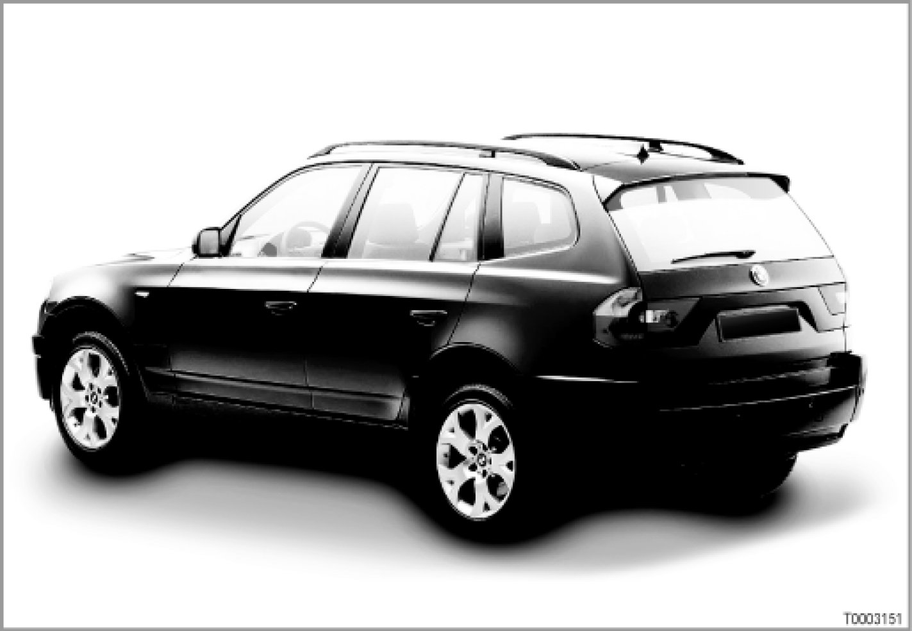
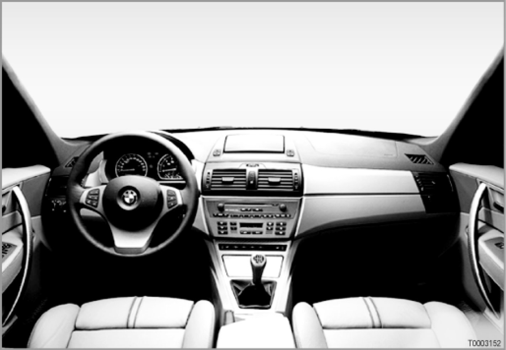
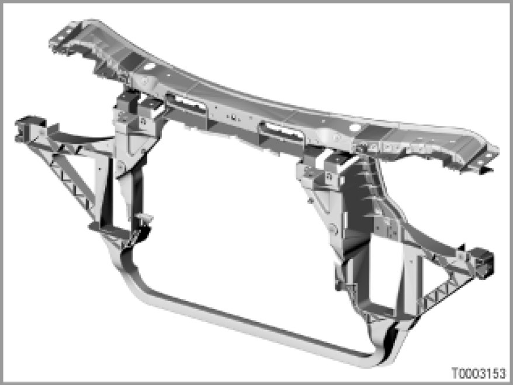
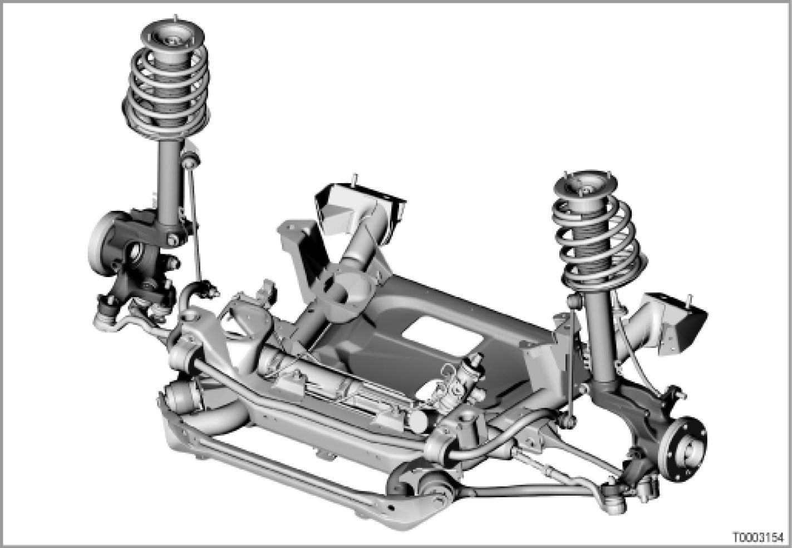
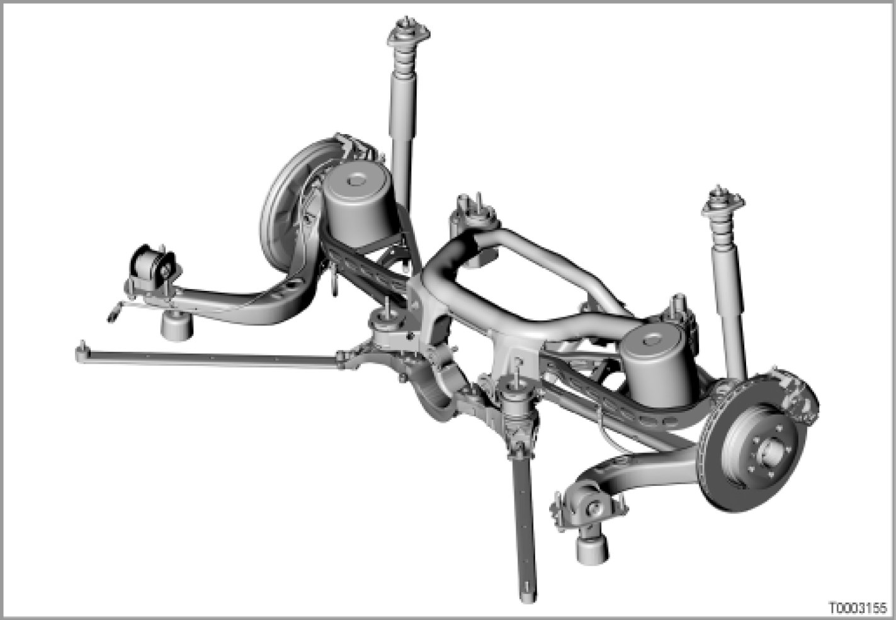

Complete Vehicle
00 02 04 (073)
Complete vehicle
E83

Highlights in brief
The technical highlights of the BMW X3 are:
- xDrive, the new all-wheel drive system with variable drive torque distribution to the front and rear axles
- a multifunctional Panorama glass sunroof
The general electrical system of the E83 is largely based on the electrical system of the E46.
The E83 also employs state-of-the-art technology in its information and communication systems, based on the systems in the E85.
The following topics are briefly described below:
- Body
- Design
- Interior
- Bulkhead
- Electrics/electronics
- Vehicle circuit structure
- Panorama glass sunroof
- Adaptive headlights
- Multiple restraint system
- Information and communication systems
- Starter actuation
- Instrument cluster
- Service interval indicator
- Center console switch cluster
- General module
- Suspension
- Runflat indicator
- Wheels and tires
- Servotronic
- Front axle
- Rear axle
- Trailer stabilization control
- Power plants
- xDrive
- Engine
- Transmission
Some of the topics are dealt with in detail in the BMW Technical bulletins stated.
Body
- Design
The BMW X3 has unmistakable, typically BMW proportions.
These include:
- the long, striking bonnet
- the roof contour the drops steeply to the rear
- a sloping rear end
- short overhangs
- a long wheelbase
The striking design of the headlights, the broad grille frame and the contoured lines of the bonnet are the defining features of the front end of the BMW X3.
Protruding wheel housing give the vehicle a sporty appearance.

The lines of the rear side windows are especially conspicuous: The lower edge of the rear side window departs from the waist line and climbs dynamically to the D-pillar.
The large tailgate is made of a single element.

- Interior
The interior is functional and yet sporty. Modern layout, right down to the finest detail make the BMW X3 what it is (e.g. intricate areas on the door handle).
Various materials are employed, from sporty aluminium to elegant full leather and wood.

- Bulkhead
The bulkhead is bolted and for the first time on a BMW made of a steel/plastic composite.

Important. If the bulkhead is damaged in an accident, do not attempt to straighten it but rather replace it.
The rigidity of the bulkhead is only provided in the original condition.
Electrics/electronics
- Vehicle circuit structure
The control units are networked in a similar manner to the E46. The following data buses are available on the E83:
- Body bus
The body bus (K bus) networks the following components:
- Components of the general electrical system
- Components of the information and communication systems
- Components of the passive safety system.
The major part of these systems and components have been taken from other models and adapted for the E83.
The control units for the Panorama glass sunroof and the multiple restraint system 4 (MRS) are connected to the K bus.
- Powertrain CAN
The powertrain CAN (PT-CAN or powertrain controller area network) links the control units for the drive and running gear control systems.
New features of the PT-CAN are: the control unit for the transfer box (VTG) and the control unit for the servotronic.
The transfer box control unit controls the distribution of drive forces between the front axle and the rear axle.
The servotronic control unit controls the speed-dependent power steering.
- LIN bus
The LIN bus (Local Interconnect-Network bus) is serial, single-wire bus, standardized for the automotive industry. The LIN bus links the components for the electric exterior mirrors: switch block, base module and exterior mirrors.
The LIN bus also connects the control unit for the adaptive headlights (AHL) with the stepper motor controllers. (The stepper motor controllers control the stepper motors for the headlight-range adjustment and for the AHL).
- Diagnosis bus
The diagnosis bus (D-bus) is connected to the entire vehicle electrical system. The individual control units are either connected directly to the D-bus or via the control unit in the instrument cluster.
- Panorama glass sunroof
The fully automatic Panorama glass sunroof comprises 2 glass sunroofs: The front glass sunroof works like a sliding/tilt sunroof, the rear glass sunroof is a tilting glass sunroof.
The drive for the Panorama glass sunroof consists of 2 DC motors.
The wind deflector reduces wind noise inside the vehicle interior. The wind deflector is automatically extended, depending on the road speed.
[more in SI Technical (SBT) 61 12 03 055] Panorama Glass Sunroof
- Adaptive headlights
The adaptive headlights (AHL) directs the beam of the headlights towards the inside of the curve when cornering - the curve is illuminated better. Visibility is thus improved.
When cornering, the driver is not looking into a "black hole" - instead, the adaptive headlights allow the driver to see the curve of the road. Adaptive headlights is an item of special equipment.
[more in SI Technical (SBT) 63 03 03 047] Description and Operation
- Multiple restraint system
The new multiple restraint system 4 (MRS) is an advanced development of the current MRS.
MRS consists of a control unit, several external sensors for recording an impact, a seat-occupancy detector and gas generators for triggering the airbags.
The external sensors are:
- 2 airbag front sensors
- Airbag sensor, front left door
- Airbag sensor, front right door
- Airbag sensor, B-pillar left
- Airbag sensor, B-pillar right
US version: Seat-occupancy detector
In the US version, the seat-occupancy detector is able to detect the weight class of the occupant:
- The seat-occupancy detector mat contains pressure-sensitive sensors.
- The pressure generated by the person sitting on the seat-occupancy detector mat is recorded by the sensors.
- The electronic evaluation unit uses the sensor signals to determine the weight class of the person on the front-passenger seat.
[more in SI Technical (SBT) 65 02 03 041] Multiple Restraint System
- Information and communication systems
The information and communication systems have the following new features/modifications:
- Different telephone systems are employed on the E83.
The permanently installed units use the "Everest" platform, bluetooth mobile phones work with the "universal charging and hands-free facility" (ULF).
- The audio system available are taken from the E85.
The loudspeaker systems are new developments and have been adapted to the acoustic conditions in the E83.
- The CD changer is installed in a user-friendly manner in the front armrest between the driver's and front-passenger seat.
- The Hi-Fi amplifier in the luggage compartment of the E83 is a modified version of the Hi-Fi amplifier from the E85 and E46. The 10-channel Hi-Fi amplifier has been made into a 6-channel Hi-Fi amplifier through a series of modifications to the internal circuitry.
- Option 209 "Navigation system Professional" includes a folding central information display (CID). The CID is located in the middle of the instrument panel.
- US version:Satellite Digital Audio Radio Service (SDARS)
In the USA, BMW uses the SDARS of "Sirius Satellite Radio Inc.".
SDARS allows digital signal (audio and information signals) to be transmitted.
Audio signals are, e.g.:
- Music
- Speech
Information signals are, e.g.:
- Radio station
- Artist
- Music track
Signals are transmitted via 3 satellites (by the national radio station "Sirius Satellite Radio Inc." in New York).
The satellites transmit the signals to the mobile SDARS tuner in the vehicle and to stationary aerials on the ground (to enlarge the reception area).
- Starter actuation
The E83 employs the EWS3 plus (EWS = electronic immobilizer). With the EWS3 plus system, the information "terminal 50 ON" is not forwarded to the DME/DDE (digital engine electronics/digital diesel electronics) by the starter, but rather directly by the EWS control unit.
- Instrument cluster
The E83 instrument cluster differs from the E85 instrument cluster as follows:
- The reading on the speedometer is restricted to a scale reading
of 250 km/h
- Additional warning light for washer fluid level in windscreen washer fluid reservoir
- Additional indicator and warning light for the digital diesel electronics (DDE)
This indicator and warning light fulfils the same functions as the indicator and warning light for the electronic engine output control (EML). The EML warning lamp lights up if a fault develops in the engine electronics.
The instrument cluster on the E83 has the same software as that on the E85. All other function are identical.
- Service interval indicator
The service interval indicator (SIA 4) us installed on the E83.
Condition Based Service (CBS) is not employed on the E83.
- Center console switch cluster
The center console switch cluster (SZM) has been taken from the E53.
The SZM button for opening the upper tailgate is not longer fitted as the E83 does not have a 2-section tailgate.
- General module
General module 5 (GM) is introduced with the E85 and on the E83 also controls the exterior mirrors (via the LIN bus).
Suspension
- Servotronic
On the E83, the servotronic (SVT) is integrated in a separate control unit.
The SVT control unit is connected to the powertrain CAN (PT-CAN) and to the body bus (K bus).
[more in SI Technical (SBT) 32 03 03 059] Servotronic E83
- Front axle
The front axle is a double pivot spring-strut axle with tension strut, transverse link and rack-and-pinion power-steering.
The E83 front axle differs from the E53 front axle as follows:
- Modified level sensor (identical component as on rear axle) with elongated hole and tab (locking device)
- New bellows on steering track rod, transverse link and tension strut
- Front axle carrier made of high-strength steel tubing and clipped plastic cover as protection against stone impact
- Screw connection for hinged bracket with different nuts at top and bottom
- Double screw connection for front axle carrier left and right

- Rear axle
The rear axle is a central-link rear axle with subframe and double-elastic differential mounting.
The E83 rear axle differs from the rear axle of the E46 all-wheel drive as follows:
- Stabilizer mounting on rear-axle member uses clamps
- Front mounting of rear axle with bolts with additional guide washer
- Torque arm with holder for tension strut
- Transverse link made of galvanizes sheet steel plate
- Hinged bracket with ball joint secured directly on the transverse link (without additional bracket)
- Damper bolted to body with 3 bolts (mounting on body)

- Wheels and tires
- All-season tires
The E83 runs as standard on 17 inch aluminium wheels with size 235 all-season tires. In addition, 18 inch wheels are available in different designs and with several tire sizes.
- Emergency wheel
In series production, all versions are equipped with an emergency wheel (4B x 17 IS18 steel rim with T135/90 R17 104 M tire).
The E83 has an emergency wheel tray for the emergency wheel on the floor of the vehicle, under the luggage compartment. The emergency wheel tray is released and lowered from the luggage compartment.
The emergency wheel tray ha a special service opening. This allows the tire pressure to be checked from the outside, without having to lower the emergency wheel tray.
- Runflat indicator
The E83 is equipped as standard with a runflat indicator (RPA). The RPA monitors the tire pressure throughout the journey. The RPA indicates that a tire has lost a significant amount of pressure relative to the other tires via an indicator and warning light any an acoustic signal.
The runflat indicator is integrated in the DSC control unit. By comparing the speed signals for all four wheels, the system detects differences in rolling circumference at the individual wheels.
[more in SI Technical (SBT) 36 01 04 078] Run Flat Indicator All Models
- Trailer stabilization control
Option 235 "Trailer coupling with detachable ball head" also includes trailer stabilization control (familiar from the E53).
Trailer stabilization control is integrated in the Dynamic Stability Control (DSC).
The system provides detects at an early stage when the trailer starts to fishtail and automatically brakes the vehicle as follows:
- Automatic brake application (by DSC)
- Reduced engine torque (by DSC)
Drive train
- xDrive
xDrive is an innovative all-wheel drive system that comprises the Dynamic Stability Control (DSC) system and an electronically controlled multi-plate clutch in the transfer box.
Drive torque is smoothly distributed between the front and rear axles by an electronically controlled multi-plate clutch according to requirements (controlled by DSC).
xDrive distributes the drive torque to both axles as required, providing the following benefits:
- Superb operating stability up to the limits imposed by the laws of physics
- Optimal forward momentum
- Excellent traction in all road situations
[more in SI Technical (SBT) 27 01 03 048] xDrive
- Engine
The following familiar engines will be available on market launch:
- 6-cylinder spark-ignition engine M54B25
- 6-cylinder spark-ignition engine M54B30
- 6-cylinder diesel engine M57D30
- Transmission
The following familiar transmission will be available on market launch:
- 6-speed manual transmission, standard
- 5-speed automatic transmission, special equipment (option 205)
Subject to change.